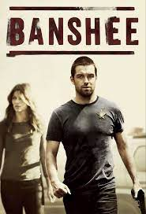
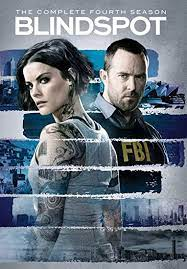
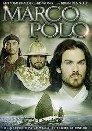
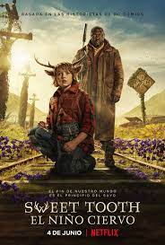

Invasión Secreta

Cuando Nick Fury se entera de una invasión secreta de la Tierra por parte de una facción de Skrulls metamorfos, se une a sus aliados y juntos emprenden una carrera contrarreloj para frustrar una inminente invasión Skrull y salvar a la humanidad.
La Lista Terminal

James Reece regresa a casa después de que todo su pelotón de Navy SEAL es emboscado, solo para descubrir que nuevas fuerzas oscuras trabajan en su contra y ponen en peligro a sus seres queridos.
Frontier

Las facciones guerreras compiten por el control del comercio de pieles en el 1700 en un juego despiadado de riqueza y poder.
Santo

Dos policías deben aprender a trabajar en equipo para atrapar al narcotraficante más buscado del mundo, cuyo rostro es todo un misterio.
Leverage

El ex investigador de seguros, Nate Ford y su banda de secuaces actúan al estilo de Robin Hoods modernos, ellos se ingenian fraudes elaborados que tienen como blanco a las personas avaras y a la gente corrupta.
Banshee
Después de pasar 15 años en la cárcel por robarle a un mafioso ucraniano, Lucas Hood es puesto en libertad; decide buscar a su antigua amante y compañera haciéndose pasar por el 'sheriff' de Banshee, un pequeño pueblo que oculta más de lo que parece.
Blindspot
Cuando una hermosa mujer sin ningún recuerdo aparece desnuda en Times Square, el agente del FBI Kurt Weller y su equipo descubren que los tatuajes de su cuerpo guardan relación con crímenes que deberán resolver.
Band of Brothers

Se relatan las experiencias de los jóvenes de la Compañía Easy del 506° Regimiento de Infantería Paracaidista de la 101.ª División Aerotransportada del Ejército de los Estados Unidos.
Marco Polo
El joven Marco Polo se embarca, en compañía de su padre y de su tío, en un viaje épico hasta la corte del Kublai Khan, en lo que hoy en día es Beijing. Una aventura en la que descubrirá tierras y gentes hasta entonces desconocidas.
El caballero Negro

En un futuro distópico en el que el mundo quedó devastado por la contaminación atmosférica, la supervivencia de la humanidad depende de un extraordinario grupo de repartidores: los Caballeros Negros.
Espía/Maestro

Durante la Guerra Fría la mano derecha del dictador rumano es también agente en cubierto de la KGB. Con una única oportunidad a seguir con vida, utilizará un viaje diplomático a Alemania como plataforma para ir a Estados Unidos.
Bienvenidos a Edén

Un grupo de jóvenes van a una fiesta en una isla paradisíaca, pero terminan viviendo un infierno lleno de secretos, peligros y trampas.
Sweet Tooth
En un mundo postapocalíptico, Gus, un niño mitad humano y mitad ciervo, busca un nuevo comienzo junto a Jeppers, un vagabundo con una vida solitaria.
Jack Ryan

El analista de la CIA Jack Ryan se ve involucrado en una tarea peligrosa. El agente logra interceptar una comunicación entre terroristas y se ve obligado a entrar en un mundo despiadado.
Moon Knight

Un trabajador de un museo que lucha contra un trastorno de identidad disociativo, recibe los poderes de un dios egipcio de la luna. Pronto descubre que estos poderes pueden ser tanto una bendición como una maldición.